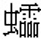
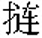

北京正是春末，也许我过于性急之故罢，觉着夏意了，于是突然记起故乡的细腰蜂[568]。那时候大约是盛夏，青蝇密集在凉棚索子上，铁黑色的细腰蜂就在桑树间或墙角的蛛网左近往来飞行，有时衔一支小青虫去了，有时拉一个蜘蛛。青虫或蜘蛛先是抵抗着不肯去，但终于乏力，被衔着腾空而去了，坐了飞机似的。
老前辈们开导我，那细腰蜂就是书上所说的果蠃，纯雌无雄，必须捉螟蛉去做继子的。她将小青虫封在窠里，自己在外面日日夜夜敲打着，祝道“像我像我”，经过若干日，——我记不清了，大约七七四十九日罢，——那青虫也就成了细腰蜂了，所以《诗经》里说：“螟蛉有子，果蠃负之。”螟蛉就是桑上小青虫。蜘蛛呢？他们没有提。我记得有几个考据家曾经立过异说，以为她其实自能生卵；其捉青虫，乃是填在窠里，给孵化出来的幼蜂做食料的。但我所遇见的前辈们都不采用此说，还道是拉去做女儿。我们为存留天地间的美谈起见，倒不如这样好。当长夏无事，遣暑林阴，瞥见二虫一拉一拒的时候，便如睹慈母教女，满怀好意，而青虫的宛转抗拒，则活像一个不识好歹的毛鸦头。
但究竟是夷人可恶，偏要讲什么科学。科学虽然给我们许多惊奇，但也搅坏了我们许多好梦。自从法国的昆虫学大家发勃耳（Fabre）[569]仔细观察之后，给幼蜂做食料的事可就证实了。而且，这细腰蜂不但是普通的凶手，还是一种很残忍的凶手，又是一个学识技术都极高明的解剖学家。她知道青虫的神经构造和作用，用了神奇的毒针，向那运动神经球上只一螫，它便麻痹为不死不活状态，这才在它身上生下蜂卵，封入窠中。青虫因为不死不活，所以不动，但也因为不活不死，所以不烂，直到她的子女孵化出来的时候，这食料还和被捕当日一样的新鲜。
三年前，我遇见神经过敏的俄国的E君[570]，有一天他忽然发愁道，不知道将来的科学家，是否不至于发明一种奇妙的药品，将这注射在谁的身上，则这人即甘心永远去做服役和战争的机器了？那时我也就皱眉叹息，装作一齐发愁的模样，以示“所见略同”之至意，殊不知我国的圣君，贤臣，圣贤，圣贤之徒，却早已有过这一种黄金世界的理想了。不是“唯辟作福，唯辟作威，唯辟玉食”[571]么？不是“君子劳心，小人劳力”[572]么？不是“治于人者食（去声）人，治人者食于人”[573]么？可惜理论虽已卓然，而终于没有发明十全的好方法。要服从作威就须不活，要贡献玉食就须不死；要被治就须不活，要供养治人者又须不死。人类升为万物之灵，自然是可贺的，但没有了细腰蜂的毒针，却很使圣君，贤臣，圣贤，圣贤之徒，以至现在的阔人，学者，教育家觉得棘手。将来未可知，若已往，则治人者虽然尽力施行过各种麻痹术，也还不能十分奏效，与果蠃并驱争先。即以皇帝一伦而言，便难免时常改姓易代，终没有“万年有道之长”；“二十四史”而多至二十四，就是可悲的铁证。现在又似乎有些别开生面了，世上挺生了一种所谓“特殊智识阶级”[574]的留学生，在研究室中研究之结果，说医学不发达是有益于人种改良的，中国妇女的境遇是极其平等的，一切道理都已不错，一切状态都已够好。E君的发愁，或者也不为无因罢，然而俄国是不要紧的，因为他们不像我们中国，有所谓“特别国情”[575]，还有所谓“特殊智识阶级”。
但这种工作，也怕终于像古人那样，不能十分奏效的罢，因为这实在比细腰蜂所做的要难得多。她于青虫，只须不动，所以仅在运动神经球上一螫，即告成功。而我们的工作，却求其能运动，无知觉，该在知觉神经中枢，加以完全的麻醉的。但知觉一失，运动也就随之失却主宰，不能贡献玉食，恭请上自“极峰”[576]下至“特殊智识阶级”的赏收享用了。就现在而言，窃以为除了遗老的圣经贤传法，学者的进研究室主义[577]，文学家和茶摊老板的莫谈国事律[578]，教育家的勿视勿听勿言勿动[579]论之外，委实还没有更好，更完全，更无流弊的方法。便是留学生的特别发见，其实也并未轶出了前贤的范围。
那么，又要“礼失而求诸野”[580]了。夷人，现在因为想去取法，姑且称之为外国，他那里，可有较好的法子么？可惜，也没有。所有者，仍不外乎不准集会，不许开口之类，和我们中华并没有什么很不同。然亦可见至道嘉猷，人同此心，心同此理，固无华夷之限也。猛兽是单独的，牛羊则结队；野牛的大队，就会排角成城以御强敌了，但拉开一匹，定只能牟牟地叫。人民与牛马同流，——此就中国而言，夷人别有分类法云，——治之之道，自然应该禁止集合：这方法是对的。其次要防说话。人能说话，已经是祸胎了，而况有时还要做文章。所以苍颉造字，夜有鬼哭[581]。鬼且反对，而况于官？猴子不会说话，猴界即向无风潮，——可是猴界中也没有官，但这又作别论，——确应该虚心取法，反朴归真，则口且不开，文章自灭：这方法也是对的。然而上文也不过就理论而言，至于实效，却依然是难说。最显著的例，是连那么专制的俄国，而尼古拉二世“龙御上宾”[582]之后，罗马诺夫氏竟已“覆宗绝祀”了。要而言之，那大缺点就在虽有二大良法，而还缺其一，便是：无法禁止人们的思想。
于是我们的造物主——假如天空真有这样的一位“主子”——就可恨了：一恨其没有永远分清“治者”与“被治者”；二恨其不给治者生一枝细腰蜂那样的毒针；三恨其不将被治者造得即使砍去了藏着的思想中枢的脑袋而还能动作——服役。三者得一，阔人的地位即永久稳固，统御也永久省了气力，而天下于是乎太平。今也不然，所以即使单想高高在上，暂时维持阔气，也还得日施手段，夜费心机，实在不胜其委屈劳神之至……。
假使没有了头颅，却还能做服役和战争的机械，世上的情形就何等地醒目呵！这时再不必用什么制帽勋章来表明阔人和窄人了，只要一看头之有无，便知道主奴，官民，上下，贵贱的区别。并且也不至于再闹什么革命，共和，会议等等的乱子了，单是电报，就要省下许多许多来。古人毕竟聪明，仿佛早想到过这样的东西，《山海经》上就记载着一种名叫“刑天”的怪物[583]。他没有了能想的头，却还活着，“以乳为目，以脐为口”，——这一点想得很周到，否则他怎么看，怎么吃呢，——实在是很值得奉为师法的。假使我们的国民都能这样，阔人又何等安全快乐？但他又“执干戚而舞”，则似乎还是死也不肯安分，和我那专为阔人图便利而设的理想底好国民又不同。陶潜[584]先生又有诗道：“刑天舞干戚，猛志固常在。”连这位貌似旷达的老隐士也这么说，可见无头也会仍有猛志，阔人的天下一时总怕难得太平的了。但有了太多的“特殊知识阶级”的国民，也许有特在例外的希望；况且精神文明太高了之后，精神的头就会提前飞去，区区物质的头的有无也算不得什么难问题。
一九二五年四月二十二日。
注 释
[567] 本篇最初发表于1925年4月24日北京《莽原》周刊第一期，署名冥昭。
[568] 细腰蜂 在昆虫学上属于膜翅目泥蜂科；关于它的延种方法，我国古代有各种不同的记载。《诗经·小雅·小宛》：“螟蛉有子，蜾蠃负之。”汉代郑玄注：“蒲卢（按即蜾蠃）取桑虫之子，负持而去，煦妪养之，以成其子。”汉代扬雄《法言·学行》：“螟

之子殪，而逢蜾蠃，祝之曰：‘类我！类我！’久则肖之矣。”最先反对上面说法的是六朝时的陶弘景，他在注《本草》“蠮螉一名土蜂”条下说：“（蠮螉）虽名土蜂，不就土中作窠，谓
土作房尔。今一种黑色细腰，衔泥于壁及器物边作房，生子如粟置其中；乃捕草上青蜘蛛十余置其中，仍塞口，以俟其子大而为粮也。其一种入芦竹管中，亦取草上青虫。一名果蠃，《诗》云：‘螟蛉有子，果蠃负之。’或言细腰蜂无雌，皆取青虫教祝，变成己子，斯为谬矣。”其后，宋代叶大庆在《考古质疑》卷六中说：“我朝嘉祐中，掌禹锡等按蜀本注云：‘蠮螉即蒲芦，蒲芦即细腰蜂。不特负持桑虫，亦以他虫入穴，用泥封之，数日成蜂飞去。陶云生子如粟在穴，乃捕他虫为之食。今人有候其封穴，坏而看之，见有卵如粟，在死虫之上，即如陶说矣。’”[569] 发勃耳（1823—1915） 通译法布尔，法国昆虫学家。著有《昆虫记》等。
[570] E君 爱罗先珂。参看本卷第243页注〔25〕。
[571] “唯辟作福，唯辟作威，唯辟玉食” 语出《尚书·洪范》。辟，即天子或诸侯。
[572] “君子劳心，小人劳力” 语出《左传》襄公九年：“君子劳心，小人劳力，先王之制也。”
[573] “治于人者食人，治人者食于人” 语出《孟子·滕文公（上）》：“或劳心，或劳力；劳心者治人，劳力者治于人。治于人者食人，治人者食于人，天下之通义也。”
[574] “特殊智识阶级” 1925年2月，段祺瑞为了抵制孙中山在共产党支持下提出的召开国民会议的主张，组织了一个御用的“善后会议”，企图从中产生由他控制的假国民会议。当时有一批曾在外国留学的人在北京组织“国外大学毕业参加国民会议同志会”，于3月29日在中央公园水榭开会，到会者百数人，他们向“善后会议”提请愿书，要求在未来的国民会议中给他们保留名额，其中说：“查国民代表会议之最大任务为制定中华民国宪法，留学者为一特殊智识阶级，无庸讳言，其应参加此项会议，多多益善。”（见1925年3月31日《京报》）作者说的所谓“特殊智识阶级”，当指这类留学生。
[575] “特别国情” 1915年袁世凯阴谋恢复帝制时，他的宪法顾问美国人古德诺（F.J.Goodnow）曾于8月10日北京《亚细亚日报》发表一篇《共和与君主论》，说中国自有“特别国情”，不适宜实行共和政治，应当恢复君主政体。这种“特别国情”的论调，曾经成为一些人阻挠民主改革和反对进步学说的借口。
[576] “极峰” 意即最高统治者。旧时官僚政客对最高统治者的媚称。
[577] 进研究室主义 对胡适当时主张的一种概括。1919年7月，胡适在《每周评论》上发表《多研究些问题，少谈些“主义”》的文章，稍后又提出学生“进研究室”、“整理国故”的口号。鲁迅认为这种主张是诱导青年逃避现实，参看本书《未有天才之前》。
[578] 莫谈国事 北洋军阀统治时期，实行恐怖政策，密探四布，茶馆酒肆里多贴有“莫谈国事”的字条，某些文人也把“莫谈国事”当作处世格言。
[579] 勿视勿听勿言勿动 语出《论语·颜渊》：“非礼勿视，非礼勿听，非礼勿言，非礼勿动。”
[580] “礼失而求诸野” 孔子的话，见《汉书·艺文志》。唐颜师古注：“言都邑失礼则于外野求之亦将有所获。”
[581] 苍颉造字夜有鬼哭 见《淮南子·本经训》：“昔者苍颉作书而天雨粟，鬼夜哭。”
[582] 尼古拉二世（Николай Ⅱ，1868—1918） 帝俄罗曼诺夫王朝最后的一个皇帝，为1917年2月革命所推翻，次年7月17日被处死。“龙御上宾”，旧时指皇帝逝世，意即乘龙仙去。典出《史记·封禅书》。
[583] 《山海经》 十八卷，约公元前四世纪至公元二世纪间的作品，内容主要是有关我国民间传说中的地理知识，还保存了不少上古时代流传下来的神话故事。“刑天”，一作形天，见该书《海外西经》：“形天与帝争神，帝断其首，葬之常羊之山。乃以乳为目，以脐为口，操干戚以舞。”干，盾牌；戚，斧头。
[584] 陶潜（约372—427） 一名渊明，字元亮，晋浔阳柴桑（今江西九江）人，东晋诗人。著作有《陶渊明集》。“刑天舞干戚”两句诗，见他的《读山海经》第十首。